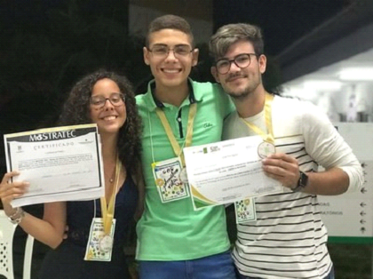

1. Rodrigo Tertulino; Leonardo Negreiros e Ryan Rocha
IFRN – Campus Mossoró
Área temática: Tecnologia e Produção
1. SILVA, R. R. T.; SOARES, F. ; SILVEIRA, S. M. . Promovendo capacitação profissional através do centro de certificação no IFRN - Campus Mossoró. In: Exposição Científica, Tecnológica e Cultural (EXPOTEC), 2018, Mossoró. Promovendo capacitação profissional através do centro de certificação no IFRN - Campus Mossoró, 2018.
2. SILVA, R. R. T.; CORINGA, R. E. G. ; BARRA, R. V. L. .
Implementação do zabbix server como gerenciador de rede em laboratório acadêmico. In: Semana de Ciência, Tecnologia e Extensão do Instituto Federal do Rio Grande do Norte (Secitex), 2018, Natal. Implementação do zabbix server como gerenciador de rede em laboratório acadêmico, 2018.
3. SILVA, R. R. T.; PEDRO, V. C. S. ; COSTA, L. C. ; MOTA, J. F. S. . PROMOVENDO CAPACITAÇÃO PROFISSIONAL ATRAVÉS DO CENTRO DE CERTIFICAÇÃO NO IFRN. CAMPUS MOSSORÓ. 2020. (Apresentação de Trabalho/Outra).
4. MOSTRATEC. PROMOVENDO CAPACITAÇÃO PROFISSIONAL ATRAVÉS DO CENTRO DE CERTIFICAÇÃO NO IFRN. CAMPUS MOSSORÓ. 2020. (Feira).

A Mostratec é uma feira de ciência e tecnologia realizada anualmente pela Fundação Liberato, em Novo Hamburgo/RS, que se destina à apresentação de projetos de pesquisa em diversas áreas do conhecimento humano, realizados por jovens cientistas do ensino médio e da educação profissional de nível técnico de todo o Brasil e do exterior.
Objetivos da Mostratec
Estimular estudantes na atividade de iniciação científica e tecnológica de forma acelerar o processo de expansão e renovação no quadro de pesquisadores;
Conduzir à sistematização e à institucionalização da pesquisa no ensino médio e profissional de nível técnico;
Estimular a imaginação, o prazer e a curiosidade através da pesquisa científica e tecnológica;
Promover a integração entre instituições de ensino, pesquisa e meio empresarial, possibilitando o desenvolvimento, a aplicação e a divulgação de novas tecnologias;
Possibilitar aos expositores e professores a integração com colegas de outras instituições de ensino de modo a ampliar suas relações e possibilitar o contato com outras culturas;
Proporcionar o intercâmbio e a participação de alunos e professores em feiras afiliadas (nacionais e internacionais).